Introduction to Matplotlib
Data Visualization Simplified: Learn How to Transform Raw Python Numbers & Tables into Clear, Compelling Visual Stories with Python & Matplotlib
🚀 01. Introduction: Why Matplotlib?
Imagine kijiye aap ek semester ke exam scores check kar rahe hain. Ek student ke teen subjects ke marks hain:
- Python: 85 marks
- SQL: 78 marks
- Data Science: 92 marks
Agar yeh numbers sirf ek normal Python list ya text table mein likhe hon, toh aapko unhe scan karke mentally compare karna padega. Lekin jaise hi aap in numbers ko ek Bar Chart mein convert karte hain, sirf ek second mein pata chal jata hai ki student ka highest performance Data Science mein hai aur lowest SQL mein.
Human brain images aur patterns ko text ya tables ke comparison mein 60,000 times faster process karta hai! Numbers store karna database ka kaam hai, lekin numbers ka meaning convey karna Data Visualization ka kaam hai.
| Representation | Format | Cognitive Effort | Best For |
|---|---|---|---|
| Raw Text / List | [85, 78, 92] |
High (manually compare each value) | Quick programming storage |
| Table / DataFrame | Columns: Subject, Marks | Medium (scanning rows & sorting) | Precise value inspection |
| Matplotlib Chart | Vertical bars with height proportional to marks | Low (instant visual comparison) | Storytelling, presentations & decision making |
Data Visualization Kya Hai aur Matplotlib Ka Role Kya Hai?
Data Visualization ka simple matlab hai: "Information aur data ko graphical context mein represent karna." Jab hum visual elements jaise charts, graphs aur maps use karte hain, tab hume data ke hidden trends, outliers aur relationships clearly nazar aate hain.
Matplotlib Python ki sabse foundational aur powerful 2D data plotting library hai. Ise John D. Hunter ne 2003 mein design kiya tha taaki Python mein MATLAB jaisa visual workflow create kiya ja sake. Aaj yeh poore Python Data Science ecosystem ki backbone hai.
Python Data Ecosystem: Matplotlib Kahan Fit Hota Hai?
- NumPy: Fast numerical arrays aur mathematical computations handle karta hai.
- Pandas: Structured tabular data (DataFrames) clean aur manipulate karta hai.
- Matplotlib: Low-level complete visual canvas provide karta hai jisme aap har line, tick, text aur pixel customize kar sakte hain.
- Seaborn: Matplotlib ke upar build ki gayi high-level statistical library hai jo ready-to-use aesthetic styles provide karti hai. Seaborn ke under-the-hood saare graphs Matplotlib Axes par hi render hote hain!
Real-World Applications: Matplotlib Kahan Use Hota Hai?
- Business & E-Commerce: Monthly sales revenue, customer growth rate aur category-wise profits track karne ke liye.
- Finance & Banking: Stock price movements, portfolio risk exposure aur monthly savings patterns analyze karne ke liye.
- Engineering & IoT: Machine sensors ki live temperatures, voltage changes aur system latency monitor karne ke liye.
- Machine Learning & AI: Model loss curves, training accuracy progression aur feature correlations dekhne ke liye.
🎯 Key Learning Outcomes
Is topic ko complete karne ke baad aap perfectly understand kar lenge:
- Matplotlib ka purpose aur architecture.
matplotlib.pyplotko sahi tareeqe se import karna.- End-to-end plotting workflow (Data → Code → Chart → Interpretation).
- Apna pehla Line Plot, Bar Chart, aur Scatter Plot create karna.
- Titles, Axis Labels, Legends, aur Grid Lines customize karna.
- High-resolution figures display aur PNG format mein save karna.
- Pyplot stateful interface aur Object-Oriented interface ke beech basic farq.
- Common beginner syntax errors aur misleading visualizations se bachna.
Core Visualization Workflow
Python Lists / Arrays
Import plt & setup
Plotting & Customizing
Canvas & Axes
Actionable Insights
⚙️ 02. Section A: Setting Up Matplotlib
Ek Python Library pre-written code ka bundle hoti hai jise hum apne programs mein re-use karte hain taaki hume wheel dobara invent na karna pade. Matplotlib standard Python ke saath by-default bundle nahi aati, isliye hume ise install karna hota hai.
Matplotlib Installation
Agar aapke terminal ya command prompt mein Matplotlib installed nahi hai, toh aap standard package manager pip se install kar sakte hain:
Jupyter Notebook ya Google Colab mein Matplotlib pehle se installed hota hai. Agar manually install karna ho toh notebook cell mein !pip install matplotlib likh kar run kar sakte hain.
Import Convention: `matplotlib` vs `matplotlib.pyplot`
Beginners aksar confuse hote hain ki poora matplotlib import karein ya matplotlib.pyplot. Samajhte hain:
matplotlibpoora main package hai jisme font managers, color engines, backends aur low-level canvas classes hoti hain.matplotlib.pyplotMatplotlib ka ek sub-module hai jo hume simple, MATLAB-style functions deta hai (jaiseplot(),title(),show()).- Community standard convention hai:
import matplotlib.pyplot as plt. Yahanpltek standard alias (short-form) hai jisse code concise rehta hai.
Example 1: Check Matplotlib Installation & Version
Pehle verify karte hain ki Matplotlib properly install ho chuka hai aur uska version check karte hain.
Always verify your library version. matplotlib.__version__ aapko current installed release confirm karta hai.
Example 2: Create Your First Simple Graph (Monthly Savings)
Aap ek college student hain aur aapne January se May tak apni monthly savings record ki hai. Chaliye iska pehla graph plot karte hain!
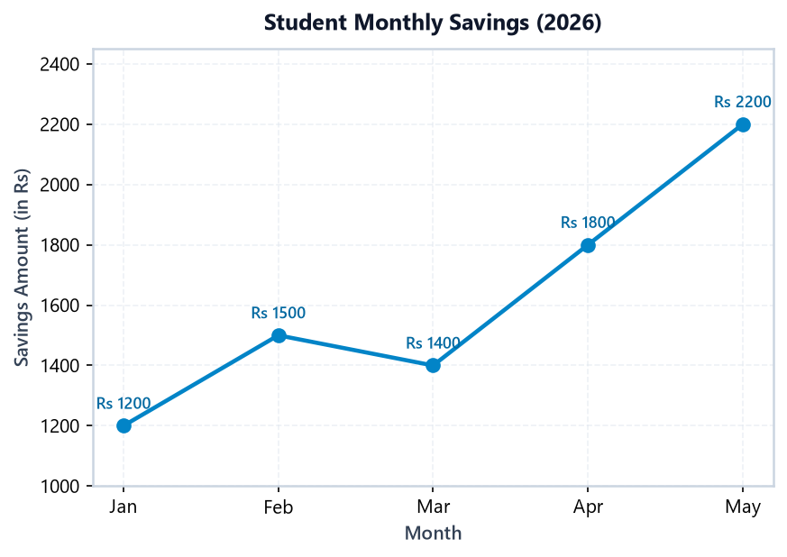
Figure 1.1: Student Monthly Savings generated via Matplotlib pyplot
Code Line-by-Line Explanation:
import matplotlib.pyplot as plt: Pyplot module kopltalias ke saath import karta hai.months&savings: Dono Python lists hain jahanmonthsX-axis par jayega aursavingsY-axis par.plt.plot(...): Yeh core function points ko coordinate system par plot karta hai aur unhe straight lines se connect karta hai.plt.title(...),plt.xlabel(...),plt.ylabel(...): Graph ko context aur readable labels dete hain.plt.grid(True): Graph ke piche subtle dotted lines add karta hai taaki numbers estimate karna aasan ho.plt.show(): Window open karke graph user ke samne display karta hai.
Graph Interpretation: March mein slight dip (₹1400) ke bawajood overall trend upwards hai, aur May mein savings ₹2200 tak reach kar gayi. Sirf 7 lines of code se humne raw numbers ko readable visual story bana diya!
🖌️ 03. Section B: Understanding Figure, Axes, and pyplot
Matplotlib seekhte waqt beginners sabse zyada confuse Figure aur Axes ke difference mein hote hain. Inhe ek painting aur canvas ke real-world analogy se samajhte hain:
- Figure: Poora blank wooden board ya picture frame hai. Ek figure ke andar multiple drawings ho sakti hain.
- Axes (Plural word with singular meaning in Matplotlib): Board ke andar wo rectangular plotting box jisme actual chart, ticks aur data points draw hote hain.
- Axis (Singular - X-Axis or Y-Axis): Ek single number line jo scale aur ticks represent karti hai (e.g. Horizontal X-axis or Vertical Y-axis).
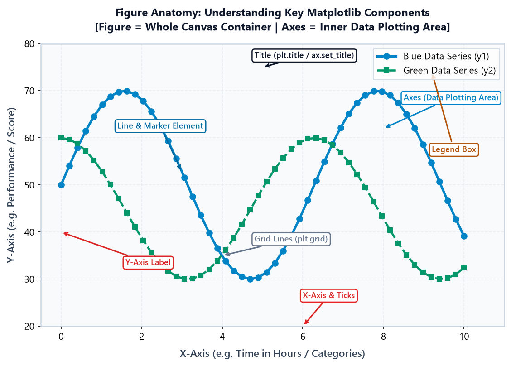
Figure 1.2: Matplotlib Figure Anatomy — Figure Canvas, Axes, X/Y Axis, Labels, Title, Legend, & Ticks
Figure Anatomy Breakdown
| Component | Function / Object | Kya Kaam Karta Hai? |
|---|---|---|
| Figure | plt.figure() / fig |
Outer canvas container jo background color aur size hold karta hai. |
| Axes | ax / fig.add_subplot() |
Actual plotting region jisme coordinate system, lines aur bars rehte hain. |
| Axis | ax.xaxis, ax.yaxis |
1-Dimensional number line jo scale, tick marks aur tick labels dictate karti hai. |
| Title | plt.title() / ax.set_title() |
Graph ka descriptive main heading. |
| X/Y Labels | plt.xlabel() / ax.set_xlabel() |
Axis par kya measure ho raha hai (along with units, e.g. "Hours", "₹"). |
| Legend | plt.legend() / ax.legend() |
Colors aur line patterns kis data series ko represent karte hain, unka guide. |
| Grid | plt.grid() / ax.grid() |
Visual reference lines jo values estimate karne mein help karti hain. |
Pyplot Interface vs Object-Oriented (OO) Approach
Matplotlib mein kaam karne ke do popular styles hain:
- Pyplot Stateful Approach:
plt.plot()call karte hi Matplotlib internally current active figure aur active axes track karta hai. Yeh quick scripts aur exploratory analysis ke liye super convenient hai. - Object-Oriented (OO) Approach: Hum explicitly
fig, ax = plt.subplots()banate hain aur directax.plot()methods call karte hain. Yeh production code, complex multi-plot dashboards aur advanced customization ke liye professional standard hai.
Example 3: Creating a Plot Using Pyplot Interface
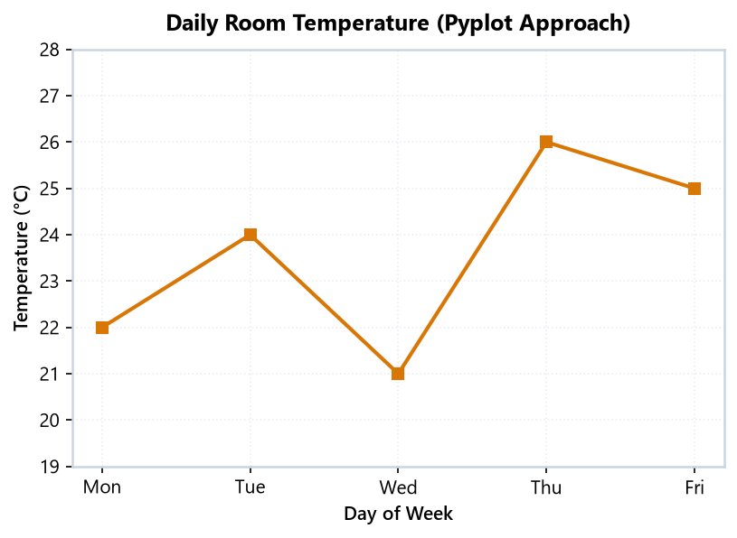
Figure 1.3: Temperature tracking using Pyplot stateful interface
Example 4: Creating the Same Plot Using Object-Oriented (OO) Approach
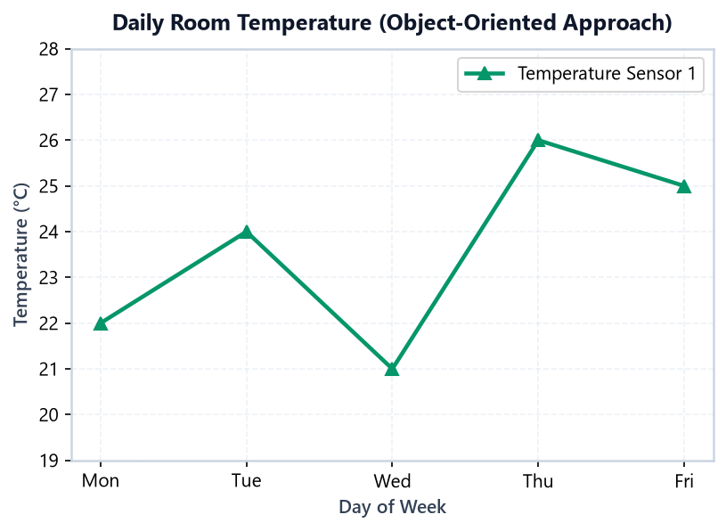
Figure 1.4: The same temperature data visualized using the explicit Object-Oriented (fig, ax) approach
Notice the prefix difference: Pyplot uses plt.title(), jabki OO approach ax.set_title() use karta hai. Is introductory topic mein hum predominantly friendly plt interface use karenge taaki aap fast practice kar sakein, lekin aage complex layouts ke liye ax foundation dhyan mein rakhiye!
📈 04. Section C: Your First Line Plot
Line Plot (Line Chart) data points ko chronologically straight line segments se connect karta hai. Yeh tab sabse powerful hota hai jab aap kisi continuous sequence (jaise time, days, months ya steps) ke across trends aur changes dekhna chahte hain.
Line Plot Kab Use Karein aur Kab NA Karein?
- ✅ Best Use Cases: Time series data, daily study hours, weekly temperatures, stock prices, website visits over time.
- ❌ Misleading Use Cases: Unrelated categorical data (jaise Red, Blue, Green colors ya Apple, Mango, Banana). Agar points ke beech koi continuous order ya time progression nahi hai, toh unhe line se connect karna misleading hota hai!
Example 5: Daily Study Hours Over 7 Days
Ek student ne pure week apne daily study duration note kiye. Hum line chart se check karte hain ki kis din peak study hui aur kis din dip aaya.
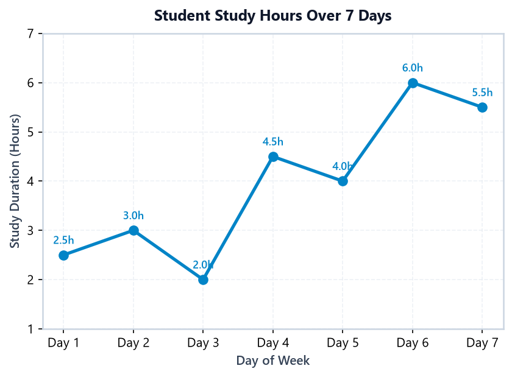
Figure 1.5: 7-Day study hours tracking progression
Insight: Day 3 par lowest study (2.0 hours) hui, jabki weekend (Day 6) par peak study (6.0 hours) hui. Line chart ek nazar mein student ke consistency aur weekend push ko clear dikha deta hai.
Example 6: 6-Month Savings Growth Trend
Ek user ne January se June tak apni savings discipline check karne ke liye balance track kiya.
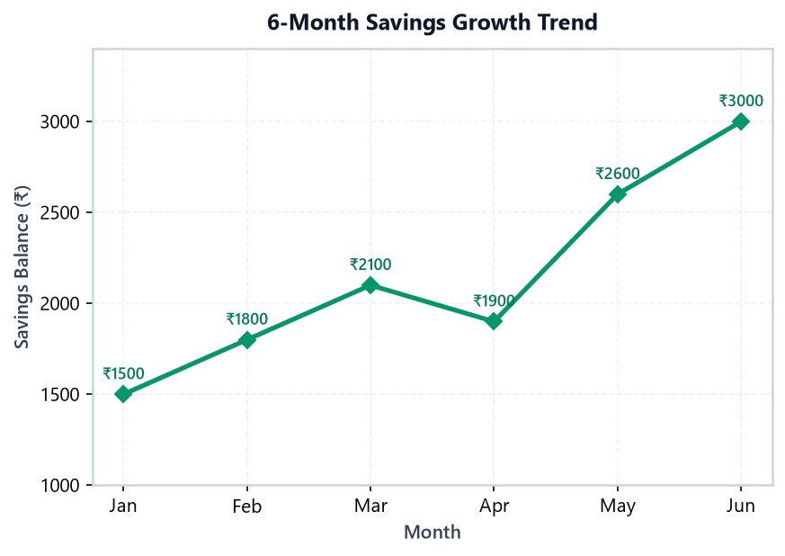
Figure 1.6: 6-Month upward financial savings trend
Insight: April mein slight dip aaya (₹1900) shaayad kisi festival ya expense ki wajah se, lekin May aur June mein sharp recovery hui aur final balance ₹3,000 achieve hua. Diamond markers (marker='D') har monthly check-in point ko highlight karte hain.
📊 05. Section D: Your First Bar Chart
Jab aapke paas discrete categories (alag-alag groups, subjects, ya departments) hote hain aur unke quantitative values ko aapas mein compare karna hota hai, tab Bar Chart (plt.bar()) gold standard visualization tool hai.
Bar Chart vs Line Chart: Farak Kya Hai?
- Line Chart: Points ko connect karta hai kyunki X-axis continuous hota hai (e.g. Time).
- Bar Chart: Har category ke liye alag isolated vertical rectangle draw karta hai. Rectangles ke beech ka gap batata hai ki categories independent hain.
- Honest Baseline Rule: Bar charts mein Y-axis hamesha 0 se start hona chahiye (zero baseline). Agar bar chart ka base 0 nahi hoga, toh visual height proportional nahi rahegi aur viewer confuse ho sakta hai!
Example 7: College Subject Marks Comparison
Aman ke 4 different academic subjects ke marks ko compare karte hain.
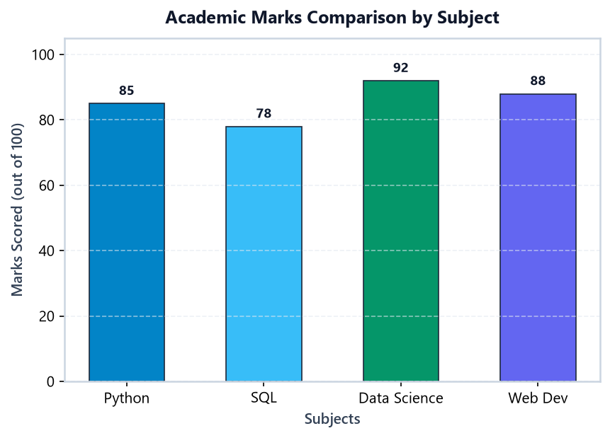
Figure 1.7: Subject marks comparison using vertical bars with zero baseline
Insight: Data Science (92) highest performing area hai aur SQL (78) mein improvement ki zarurat hai. Categories isolated hain isliye bar chart line chart se kahi zyada appropriate hai.
Example 8: E-Commerce Category Sales Comparison
Ek retail store ke 5 main product departments ki monthly revenue in Lakhs compare karni hai.
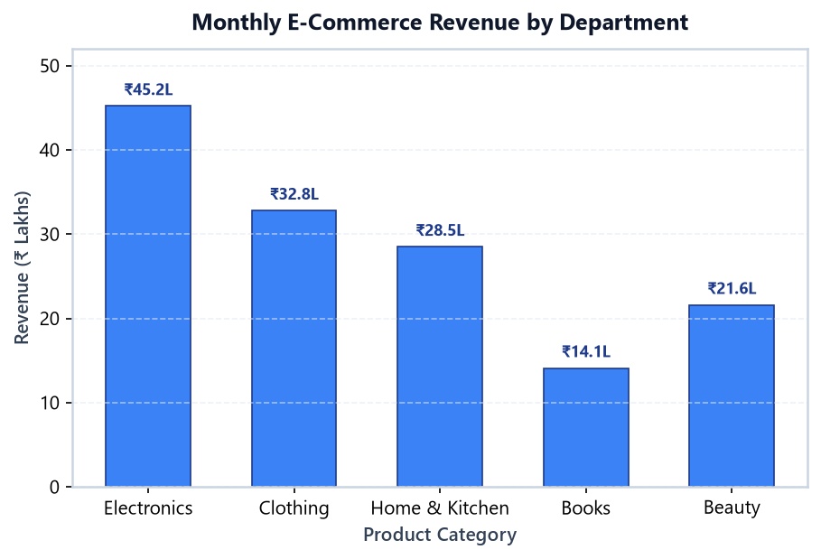
Figure 1.8: Department-wise revenue distribution in retail business
Insight: Electronics (₹45.2L) aur Clothing (₹32.8L) business ke 60%+ revenue drive kar rahe hain, jabki Books (₹14.1L) niche segment hai. Important: Yeh chart revenue compare karta hai, profit margin nahi!
🎯 06. Section E: Your First Scatter Plot
Scatter Plot (plt.scatter()) har data point ko coordinate space mein ek dot ke roop mein render karta hai. Yeh tab use hota hai jab aap do numerical variables ke beech ka relationship, correlation ya spread investigate karna chahte hain.
Agar do variables ek saath badh rahe hain (positive association), iska matlab yeh hargiz nahi hota ki ek variable doosre variable ko cause kar raha hai! Hamesha domain context aur hidden variables ko consider karein.
Example 9: Study Hours vs Exam Marks
12 students ke daily study hours aur unke resulting exam score ka scatter plot banate hain.
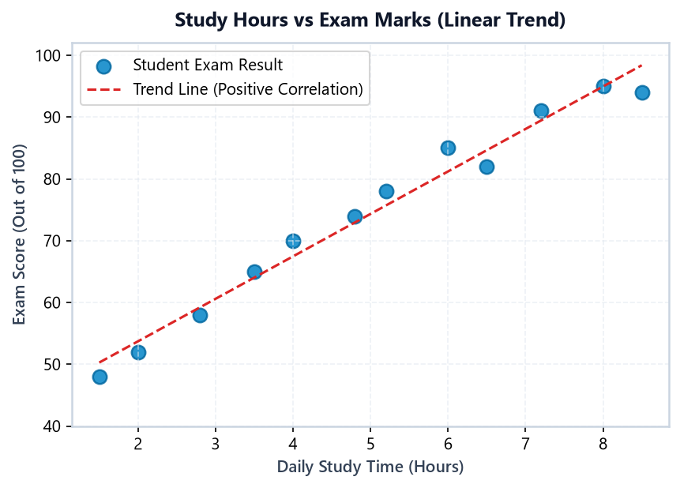
Figure 1.9: Positive correlation between study time and exam scores
Insight: Points bottom-left se top-right move kar rahe hain, jo Positive Correlation indicate karta hai: Zyada study time generally higher scores ke saath associated hai. Lekin notice karein 6.5 hrs study karne wale student (82 marks) ne 6.0 hrs wale student (85 marks) se thode kam marks score kiye, jo show karta hai ki study quality aur test temperament bhi matter karta hai.
Example 10: Concurrent Website Visitors vs Server Response Time
Ek backend server par concurrent traffic aur uski API latency (response time in milliseconds) ka relationship examine karte hain.
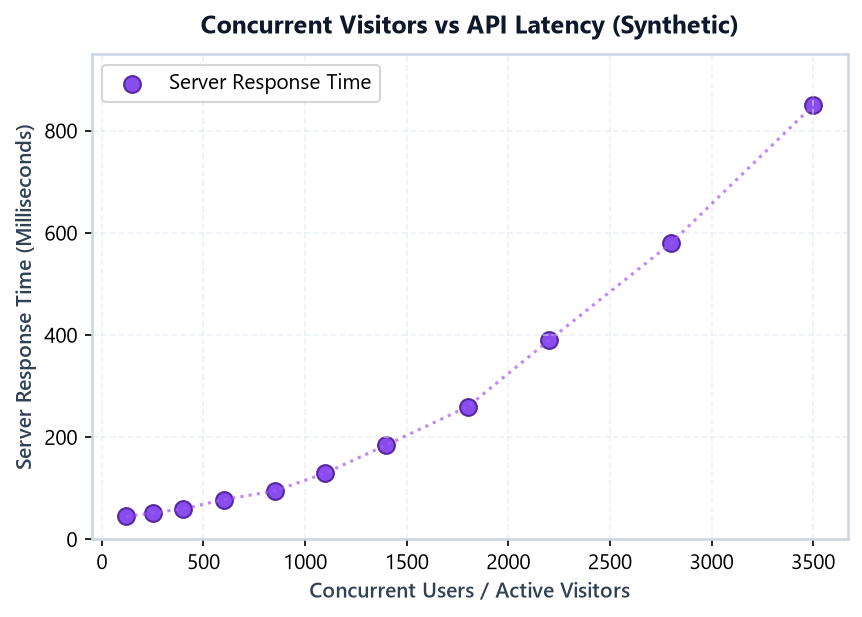
Figure 1.10: Non-linear exponential latency spike under increasing user load
Insight: 1500 users tak latency comfortably 200ms ke under rehti hai. Lekin 2000 users ke baad response time sharply spike karta hai (850ms), jo indicate karta hai ki server thread pool saturate ho raha hai aur auto-scaling enable karni chahiye.
👁️ 07. Section F: Making Graphs Readable
Ek graph banana aasan hai, lekin ek readable aur honest graph banana ek art hai. Matplotlib hume chart readability boost karne ke liye essential customization functions provide karta hai:
| Function | Purpose | Best Practice Tip |
|---|---|---|
plt.title("...") |
Chart ka context aur takeaway declare karta hai. | Vague title (e.g. "Graph 1") ke bajaye descriptive title (e.g. "Monthly Sales (2026)") use karein. |
plt.xlabel() / plt.ylabel() |
Axes ko clearly define karta hai. | Hamesha units mention karein (e.g. "Revenue (₹ Lakhs)", "Duration (Hrs)"). |
plt.grid(True) |
Values interpolate karne mein eye ko guide karta hai. | Alpha 0.5-0.7 rakhein taaki grid data ko overpower na kare. |
plt.legend() |
Multiple data series ko identify karne ka label box. | Jab 2 ya zyada lines/bars hon tab mandatory hai; single series mein optional. |
plt.xlim() / plt.ylim() |
Axis boundaries manually constrain karta hai. | Extreme zooming se bachein jisse normal variation dramatic spike na lage. |
Example 11: Improve a Basic Line Plot with Customizations
Ek barebones plot ko readable banate hain title, labels, grid aur threshold line add karke.
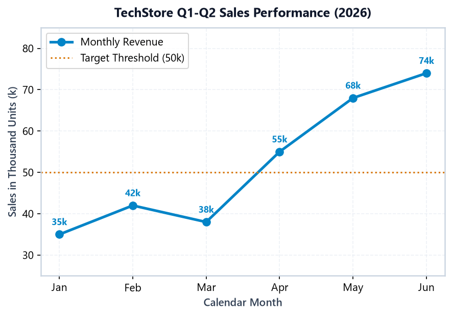
Figure 1.11: Enhanced line plot featuring descriptive labels, grid, and a target benchmark line
Example 12: Compare Two Series (Actual vs Target Monthly Sales)
Ek hi chart par do alag lines plot karke compare karte hain ki business plan vs reality mein kitna gap tha.
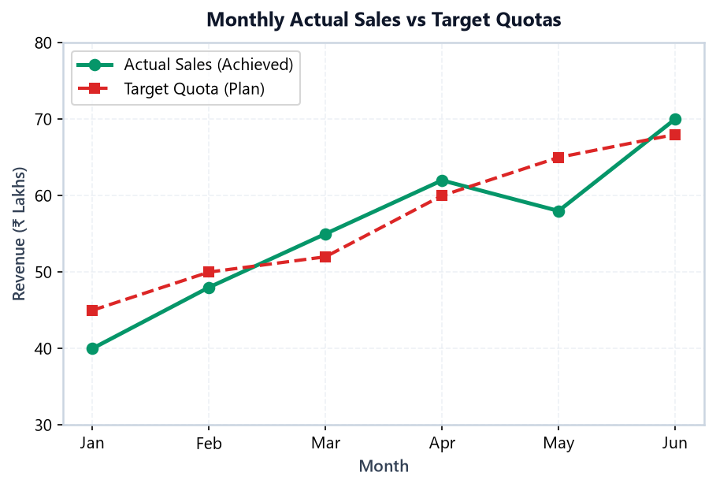
Figure 1.12: Dual-series comparative visualization with clear legend & line distinctions
Insight: Jan-Feb mein actual sales target se peeche thi, March-April mein target exceed hua, May mein slight dip aaya, aur June mein team ne ₹70L ke saath target (₹68L) beat kar diya. Solid vs dashed line pattern visual clarity ensure karta hai.
🎨 08. Section G: Figure Size, Markers, Line Styles, and Colors
Styling ka purpose sirf graph ko "sundar" banana nahi hota, balki information delivery ko instant aur accessible banana hota hai.
Core Styling Arguments in `plt.plot()`
figsize=(width, height): Inches mein overall canvas dimension set karta hai (e.g.(7.2, 4.3)).color: Hex codes ('#0284c7'), CSS color names ('blue','crimson') ya short codes ('b','g','r').marker: Data points par shape symbol banata hai ('o'circle,'s'square,'^'triangle,'D'diamond).linestyle: Line ka texture ('-'solid,'--'dashed,':'dotted,'-.'dash-dot).linewidth: Line ki thickness (default is 1.5; 2.0-2.8 gives great readability).alpha: Transparency value between 0.0 (invisible) and 1.0 (fully opaque). Overlapping points ya comparison lines ke liye best hai.
Example 13: Multi-Subject Progression Using Markers & Linestyles
3 subjects ke across 5 semesters ka score progression track karte hain. Notice kijiye har subject ko alag marker aur alag line style diya gaya hai taaki color-blind users bhi distinguish kar sakein.
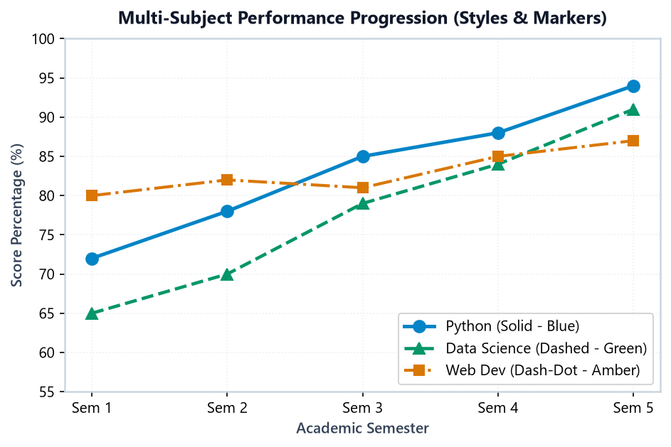
Figure 1.13: Multi-series progression combining colors, line styles, and distinct marker shapes
Example 14: Comparing Flagship vs Budget Product Sales with Alpha
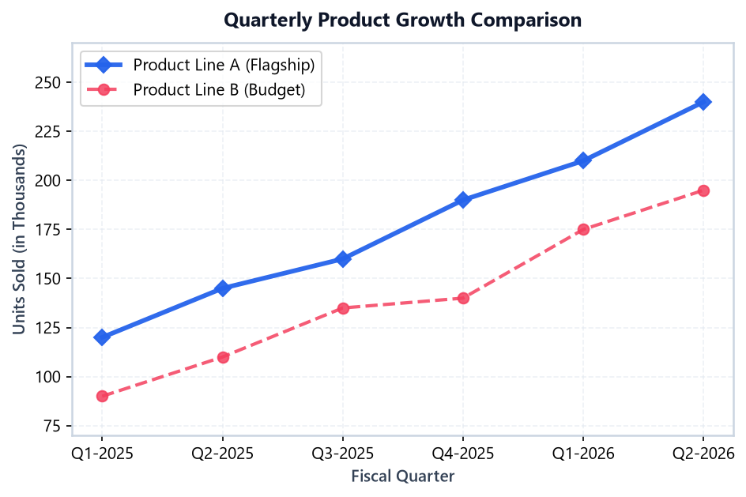
Figure 1.14: Line comparisons emphasizing hierarchy through linewidth and subtle alpha transparency
Design Tip: Flagship product ko thick solid line (2.8) aur diamond marker diya gaya hai jabki secondary product ko dashed line (2.0). Yeh visual hierarchy create karta hai, jisse viewer ko turant samajh aata hai ki primary focus kahan hai.
💾 09. Section H: Displaying and Saving Graphs
Interactive development mein hum plt.show() karte hain, lekin automated pipelines, web apps ya reports mein hume graphs ko image files (jaise PNG ya SVG) ke roop mein disk par save karna hota hai using plt.savefig().
Agar aap plt.show() ke BAAD plt.savefig() call karenge, toh Matplotlib plt.show() hone par purana canvas destroy kar deta hai aur ek naya blank figure create kar deta hai, jisse saved PNG completely blank/white aati hai! Hamesha plt.savefig() pehle call karein, ya plt.show() se pehle figure save karein!
Critical Parameters in `plt.savefig()`
fname: File path aur name (e.g.'my_chart.png'). PNG raster images ke liye ideal hai; SVG vector diagrams ke liye.dpi=150: Dots Per Inch. Default 100 dpi thoda blurry lag sakta hai; 150-300 dpi crisp high-resolution charts produce karta hai.bbox_inches="tight": Extremely important parameter! Yeh Matplotlib ko instruct karta hai ki chart ke outer margins aur cut-off labels ko automatic crop karke perfectly frame kare.
Example 15: Display and Save Line Plot with File Verification
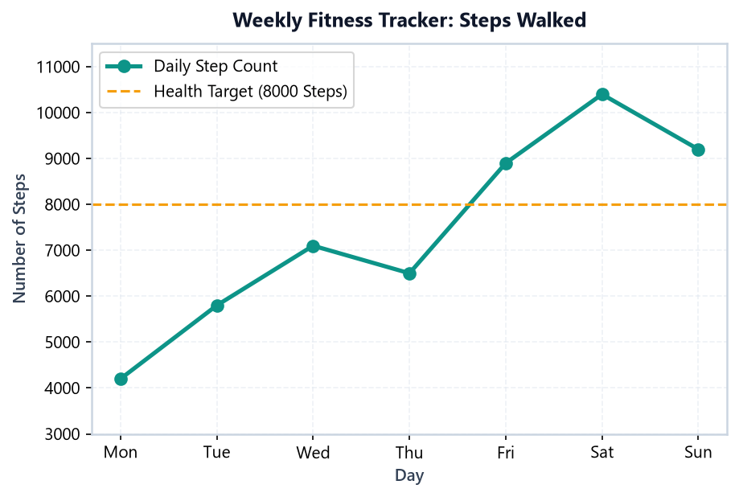
Figure 1.15: Fitness tracker line plot saved at 150 DPI with tight bounding box
Example 16: Save Customized Bar Chart with Tight Layout
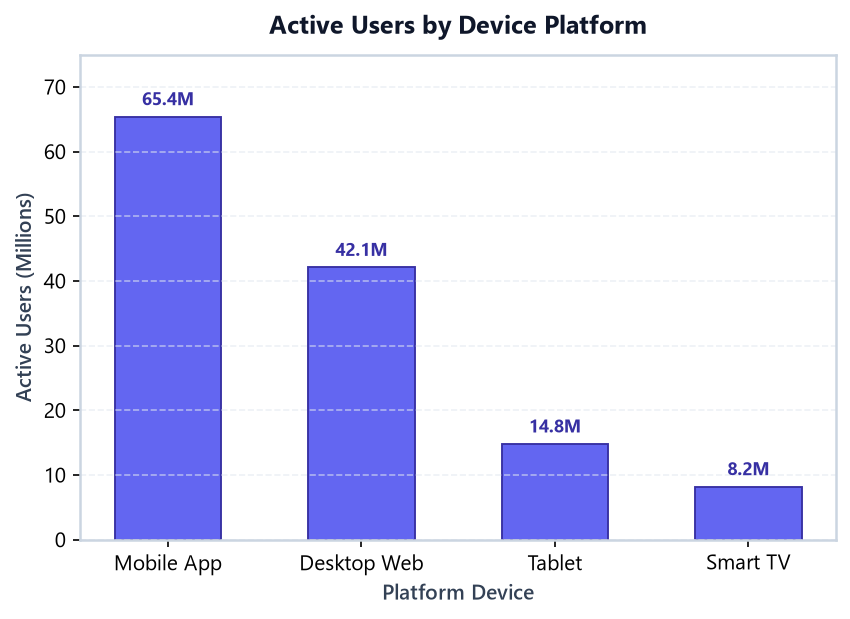
Figure 1.16: Platform device bar chart saved as a high-density standalone image
💼 10. Section I: Real-Life Mini Case Studies
Real-world data science mein aap sirf chart draw nahi karte, balki business ya academic problems solve karte hain. Chaliye do comprehensive end-to-end case studies execute karte hain!
Case Study 1: College Academic Performance Benchmarking
Scenario: College student Aman ne 5 subjects mein semester exams diye. Head of Department dekhna chahte hain ki Aman ka score Class Average score ke comparison mein kahan stand karta hai.
Stage 1: Data Preparation & Grouped Setup
Stage 2: Comparative Grouped Bar Chart
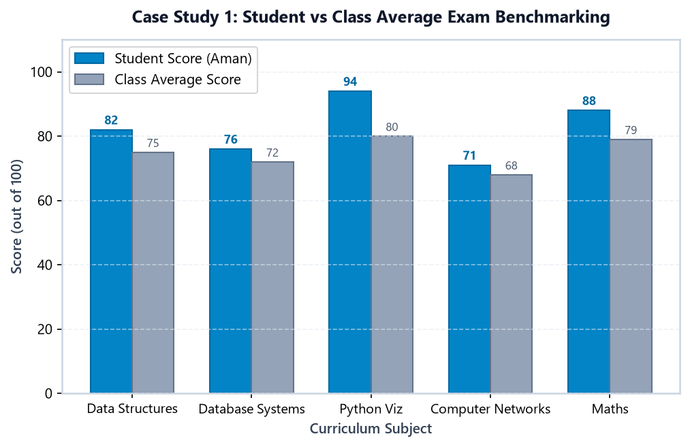
Figure 1.17: Side-by-side grouped bar chart benchmarking student marks against the class average
Conclusion: Aman ne sabhi 5 subjects mein class average se better perform kiya hai. Sabse bada lead Python Viz (+14 marks) mein hai, jabki Computer Networks (+3 marks) mein performance class average ke kafi close hai. Data clearly suggest karta hai ki student practical coding subjects mein stronger hai.
Case Study 2: E-Commerce Monthly Revenue vs Budget Quota
Scenario: E-commerce business leadership team Q1-Q2 (H1) ke monthly revenue ko pre-approved budget targets ke against audit karna chahti hai.
Stage 1: Revenue vs Target Variance Analysis
Stage 2: Comparative Line Chart with Surplus/Deficit Fill
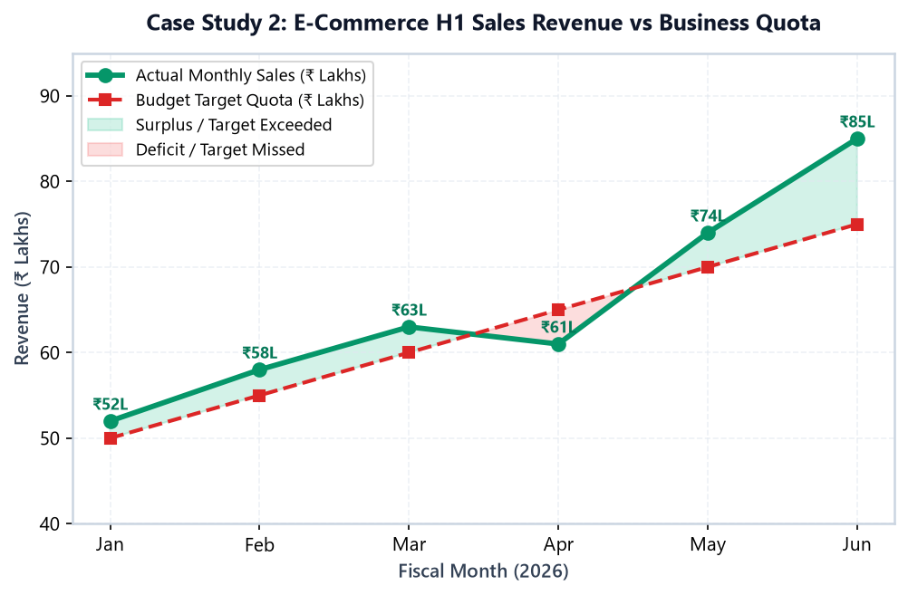
Figure 1.18: E-Commerce H1 actual revenue vs planned budget with shaded variance areas
Conclusion: Company ne April mein target miss kiya (₹61L vs ₹65L target, red deficit shade), lekin May aur June mein massive surge ke saath Q2 close kiya (June ₹85L vs ₹75L target). Overall H1 net surplus +₹18 Lakhs raha (Total Actual ₹393L vs Budget ₹375L), jo strong business health indicate karta hai.
🚧 11. Section J: Common Beginner Mistakes & Fixes
Matplotlib seekhte waqt beginners aksar in 12 common mistakes mein fas jaate hain. Inhe pehle se jaan lene se aapka ghanto ka debugging time bachega:
1. ValueError: x and y must have same first dimension
The Mistake: X-axis aur Y-axis lists ki length match nahi hoti (e.g. 5 months aur 4 data values).
2. Forgetting `plt.show()` in Standard Python Terminal
Jupyter Notebook automatic inline output display kar deta hai, lekin jab aap standard terminal ya .py script run karte hain, bina plt.show() ke koi window open nahi hoti. Hamesha script ke end mein plt.show() add karein.
3. Calling `plt.savefig()` AFTER `plt.show()` (Blank Image Bug)
Jaise hi plt.show() execute hota hai, Matplotlib GUI window band hone ke baad figure reset kar deta hai. Agar uske baad plt.savefig() likha ho toh saved file blank aati hai. Fix: Hamesha pehle save karein: plt.savefig('chart.png') then plt.show().
4. Forgetting Axis Labels and Units
Agar Y-axis par sirf 10, 20, 30 likha ho aur label na ho, toh viewer ko nahi pata chalega ki yeh Rupees hain, Percentages hain, ya Seconds hain. Hamesha plt.xlabel() aur plt.ylabel() units ke saath likhein.
5. Connecting Independent Categories with a Line Plot
Categorical data (jaise Laptop Brands: Dell, HP, Apple) ke beech line plot draw karna scientifically meaningless hai kyunki Dell aur HP ke beech koi continuous interpolation exist nahi karti. Categories ke liye Bar Chart use karein.
6. Non-Zero Baseline in Bar Charts (Visual Distortion)
Agar do values 98 aur 100 hain, aur aapne Y-axis 95 se start kar diya, toh 100 wala bar 98 wale bar se double height ka dikhega, jo viewers ko manipulate karta hai. Bar charts must start at zero (plt.ylim(0, ...)).
7. Memory Leak: Not Closing Figures in Loops
Agar aap loop mein 100 graphs generate kar rahe hain aur plt.close() call nahi kar rahe, toh Matplotlib RAM fill karta rahega (RuntimeWarning: More than 20 figures have been opened). Loop ke end mein plt.close(fig) lagayein.
8. Confusing `Axes` (Plot Canvas) with `Axis` (1D Scale)
In Matplotlib, Axes ek poora plotting box hota hai (jisme X-axis aur Y-axis dono hote hain). Axis ek single dimension line hoti hai (jaise ax.xaxis).
9. Overcrowded Legends and Misplaced Labels
Agar chart par sirf ek single bar plot hai, toh uspar redundant legend lagana chart clutter karta hai. Legend sirf tab use karein jab 2 ya zyada data series aapas mein compare ho rahi hon.
10. Clipped Axis Labels on Saved Image
Aksar saved PNG mein bottom labels cut ho jaate hain. Fix: Hamesha plt.savefig(..., bbox_inches="tight") pass karein.
11. Assuming Scatter Plot Proves Direct Causation
Ice cream sales aur sunburn cases dono summer mein badhte hain. Dono mein strong positive scatter correlation dikhega, lekin ice cream khane se sunburn nahi hota! Hamesha third lurking variables (jaise hot weather) analyze karein.
12. Hardcoded File Paths in Scripts
Windows desktop paths (e.g. C:\Users\name\Desktop\chart.png) doosre computers ya server environments mein fail ho jaate hain. Hamesha project-relative paths (assets/chart.png) use karein.
🏆 12. Section K: Mini Challenge & Course Recap
🤔 The Student Challenge
Aapko apni learning verify karni hai! Ek chota Python script likhiye jo niche diye gaye requirements ko fulfill kare:
- Three subjects ka marks dataset banayein:
Physics: 78%,Chemistry: 84%,Mathematics: 91%. - Ek clean Bar Chart draw kijiye (proper colors ke saath).
- Descriptive title:
"Mini Challenge: 3-Subject Score Report". - X-Axis label (
"School Subject") aur Y-Axis label ("Score Percentage (%)"). - Y-axis range 0 se 105 set kijiye taaki zero-baseline rule follow ho.
- Horizontal subtle grid lines enable kijiye (
axis='y'). - Graph ko
"assets/topic01_challenge_solution.png"ke naam sebbox_inches='tight'ke saath save kijiye.
👀 Click Here to Reveal Challenge Solution Code
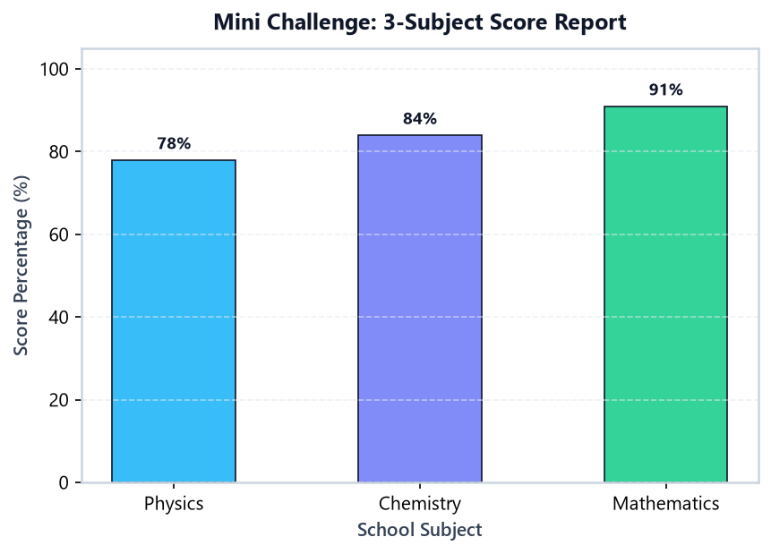
Figure 1.19: Verified student challenge output chart
📚 Essential Terminology Glossary
| Term | Definition (In Simple Hinglish) |
|---|---|
| Matplotlib | Python ki standard plotting library jisse 2D static, animated aur interactive figures banaye jaate hain. |
| Pyplot | Matplotlib ka procedural sub-module jo simple function calls se MATLAB-style plotting allow karta hai. |
| Figure | The top-level outer canvas jo saare subplots, titles aur visual elements ko hold karta hai. |
| Axes | The bounding box/area jisme actual data plot hota hai. Ek Figure ke andar multiple Axes ho sakte hain. |
| Ticks | Axis par bane small markers aur unke labels (numbers ya category names) jo scale point karte hain. |
| DPI | Dots Per Inch — image ka print resolution and pixel sharpness. Higher DPI = sharper images. |
| bbox_inches="tight" | Saving parameter jo figure ke aas-paas ka unnecessary whitespace cut karta hai aur labels ko clipping se bachata hai. |
✅ 5-Step Chart Quality Checklist
Koi bhi chart share karne ya report mein daalne se pehle in 5 questions ko check karein:
- ☑ Descriptive Title: Kya title clearly batata hai ki chart kis baare mein hai?
- ☑ Labeled Axes with Units: Kya X aur Y axes labeled hain, aur units (e.g. ₹, kg, hours, %) mentioned hain?
- ☑ Appropriate Chart Type: Continuous trend ke liye Line plot, discrete categories ke liye Bar chart, aur relationships ke liye Scatter plot use kiya hai?
- ☑ Zero Baseline (for Bars): Kya bar chart ka Y-axis 0 se start hota hai taaki heights proportionally honest hon?
- ☑ Saved Cleanly: Kya
plt.savefig()meindpi=150aurbbox_inches="tight"pass kiya gaya hai?
Congratulations! Aapne Matplotlib ke foundational building blocks master kar liye hain. Agle topic — Topic 2: Pyplot & Basic Plotting — mein hum pyplot stateful state-machine ko deeply explore karenge, advanced line customizations seekhenge, aur complex multi-series comparisons ko effortlessly code karenge!